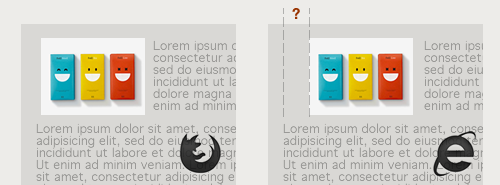

un problema típico en explorer
Internet Explorer 6 tiene una amplia variedad de bugs relacionados con la flotación.
El más famoso es el double-margin bug, que dice que un objeto flotado en ie6 duplica sus márgenes en infinidad de situaciones. Por ejemplo, esta situación:
img {
float:left;
margin: 5px 10px 5px 5px;
}
Esta situación tan simple nos daría con toda probabilidad un disgustillo en explorer y tendríamos un margen izquierdo de al menos el doble del valor declarado.

La solución es sencilla, pero cuando no la conoces te puedes volver loco a jugar con todas las propiedades.
img {
float:left;
margin: 5px 10px 5px 5px;
display: inline;
}
Por cierto bonito broche ¿verdad? :)